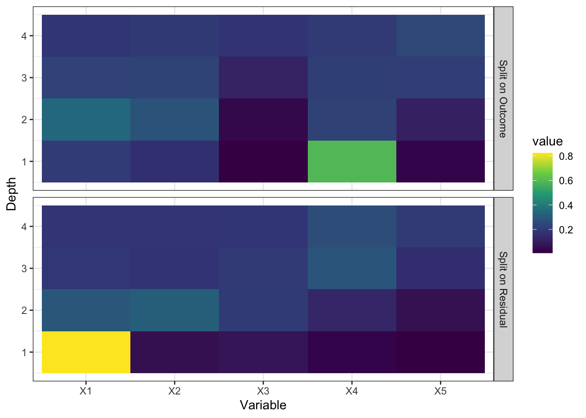

library(tidyverse)
library(data.table)
library(grf)
library(parallel)
library(gt)9 Local Linear Forest
Local linear forest (LLF) is an extension of random forest (RF) and also a generalized random forest (GRF) (Friedberg et al. 2020). We first see that RF is actually a special case of local constant regression. We will then see how LLF builds on RF from the view point of a local regression method.
9.1 Theoretical background
Suppose \(T\) tress have been built after a random forest model is trained on a dataset. Now, let \(\eta_{i,t}(X)\) takes \(1\) if observation \(i\) belongs to the same leaf as \(X\) in tree \(t\), where \(X\) is a vector of covariates (\(K\) variables). Then, the RF’s predicted value of \(y\) conditional on a particular value of \(X\) (say, \(X_0\)) can be written as follows:
\[ \begin{aligned} \hat{y}(X_0) = \frac{1}{T} \cdot\sum_{t=1}^T\sum_{i=1}^N \frac{\eta_{i,t}(X_0)}{\sum_{i=1}^N\eta_{i,t}(X_0)}\cdot y_i \end{aligned} \]
Note that \(\sum_{i=1}^N\eta_{i,t}(X_0)\) represents the number of observations in the same leaf as \(X_0\). Therefore, \(\sum_{i=1}^N \frac{\eta_{i,t}(X_0)}{\sum_{i=1}^N\eta_{i,t}(X_0)}\cdot y_i\) is the average value of \(y\) of the leaf that \(X_0\) belongs to. So, while looking slightly complicated, it is the average value of \(y\) of the tree \(X_0\) belongs to averaged across the trees.
We can switch the summations like this,
\[ \begin{aligned} \hat{y}(X_0) = \sum_{i=1}^N \cdot\frac{1}{T}\sum_{t=1}^T\frac{\eta_{i,t}(X_0)}{\sum_{i=1}^N\eta_{i,t}(X_0)}\cdot y_i \end{aligned} \]
Let \(\alpha(X_i, X_0)\) denote \(\frac{1}{T}\sum_{t=1}^T\frac{\eta_{i,t}(X_0)}{\sum_{i=1}^N\eta_{i,t}(X_0)}\). Then, we can rewrite the above equation as
\[ \begin{aligned} \hat{y}(X_0) = \sum_{i=1}^N \alpha(X_i,X_0) \cdot y_i \end{aligned} \]
It is easy to show that \(\hat{y}(X_0)\) is a solution to the following minimization problem.
\[ \begin{aligned} Min_{\theta} \sum_{i=1}^N \alpha(X_i,X_0)\cdot[y_i -\theta]^2 \end{aligned} \tag{9.1}\]
In this formulation of the problem, \(\alpha(X_i,X_0)\) can be considered the weight given to observation \(i\). By definition,
- \(0 \leq \alpha(X_i,X_0) \leq 1\)
- \(\sum_{i=1}^N \alpha(X_i,X_0) = 1\)
You may notice that Equation 17.1 is actually a special case of local constant regression where the individual weights are \(\alpha(X_i, X_0)\). Roughly speaking, \(\alpha(X_i, X_0)\) measures how often observation \(i\) share the same leaves as the evaluation point (\(X_0\)) across \(T\) trees. So, it measures how similar \(X_i\) is to \(X_0\) in the RF way, but not based on euclidean distance (which is subject to curse of dimensionality). So, RF is actually a local constant regression with a special way of distributing weights to the individual observations. This interpretation leads to a natural extension. Why don’t we solve local linear regression problem instead, which would be more appropriate if \(y\) is a smooth function of \(X\)?
Rewriting Equation 17.1 as a local linear regression problem.
\[ \begin{aligned} Min_{\mu, \beta} \sum_{i=1}^N \alpha(X_i,X_0)\cdot[y_i -\mu - (X_i - X_0)\beta]^2 \end{aligned} \tag{9.2}\]
where \(\mu\) is a scalar (intercept) and \(\beta\) is a vector of parameters (\(K \times 1\)).
This approach was proposed by Bloniarz et al. (2016) and they showed modest improvement over RF. LLF by Friedberg et al. (2020) differ from this approach in two important ways.
Let’s look at the first modification. In RF, when deciding how to split a node (parent node), we choose a split that solves the following problem:
\[ \begin{aligned} \frac{1}{N_1}\sum_{i\in C_1}(Y_i - \bar{Y_1}) + \frac{1}{N_2}\sum_{i\in C_2}(Y_i - \bar{Y_2}) \end{aligned} \]
where \(C_1\) and \(C_2\) are child nodes, and \(\bar{Y_1}\) and \(\bar{Y_2}\) are the mean value of the outcome for \(C_1\) and \(C_2\), respectively. Instead, LLF by Friedberg et al. (2020) first regresses \(Y\) on \(X\) using ridge regression using the observations in the parent node, finds the residuals, and then uses the residuals in place of \(Y\) itself.
Now, let’s look at the second modification. LLF implemented by the grf package adds the ridge penalty to avoid over-fitting and solve the following problem:
\[ \begin{aligned} Min_{\mu, \beta} \sum_{i=1}^N \alpha(X_i,X_0)\cdot[y_i -\mu - (X_i - X_0)\beta]^2 + \lambda||\beta||^2_2 \end{aligned} \tag{9.3}\]
where \(\lambda\) is the regularization parameter. LLF estimator is a weighted ridge regression, and it has a nice analytical solution (just like a regular ridge regression). With the following notations,
- \(A\): the diagonal matrix where its diagonal element at \(\{i, i\}\) is the weight for observation \(i\), (\(\alpha(X_i,X_0)\), obtained based on the trees grown using the modified splitting process.
- \(\Delta\): the \(N \times K\) (the intercept plus \(K-1\) covariates) matrix where \(\Delta_{i,1} = 1\) and \(\Delta_{i,j} = x_{i,j} - x_{0,j}\).
- \(J\): \((K+1) \times (K+1)\) diagonal matrix where its diagonal elements are all \(1\) except \(J_{1,1}\), which is 0 to not penalize the intercept.
- \(\theta\): \(\{\mu, \beta\}\)
\[ \begin{aligned} \hat{\theta}_{llf} = (\Delta'A\Delta + \lambda J)^{-1}\Delta'AY \end{aligned} \]
9.2 Performance comparison: LLF v.s. RF
First, let’s consider the following DGP that is used in Friedberg et al. (2020).
9.2.1 DGP 1
We consider the following four methods presented in (tab-methods?).
| Method | Split on outcome | Linear Correction |
|---|---|---|
| 1 | No | No |
| 2 | No | X1 |
| 3 | Yes | All |
| 4 | Yes | X1 |
Method 1 is equivalent to a standard RF estimation. Method 2 grows trees like RF, but make local linear corrections on \(X_1\) at the time of prediction. This means that at the prediction stage, only \(X_1\) is used in Equation 9.2 instead of using all of \(10\) variables in \(X\). Since we know \(X_1\) is the only variable that affects \(y\) in DGP 1, this way of linear correction should perform better than using all of the \(10\) variables in \(X\). Of course, in practice, you do not get to do this. Method 3 splits on the residuals from ridge regression, and uses all of the \(10\) variables in \(X\) for linear correction. Method 4 splits on the residuals from ridge regression and uses only \(X1\) for local linear correction.
Figure 9.1 presents how \(\hat{y}(X)\) for the test data (black dots) changes according to the value of \(X_1\) and \(E[y|X]\) (red line). Note that heterogeneity in \(\hat{y}(X)\) at the same value of \(X_1\) occurs dues to modeling error: the trained model attributed some of the variations in observed \(y\) to other variables than \(X_1\) even though \(X_1\) is the only variable that is actually affecting \(y\) as you can see in DGP 1. Figure 9.1 indicates that irrespective of whether you split on \(y\) or residuals from ridge regression, linear correction on \(X1\) can substantially reduce bias. Method 4 seems to perform slightly better than Method 2 in this instance. However, when all the variables in \(X\) (that include many irrelevant variables) are used for linear correction (Method 3), its benefit disappears, performing about the same as Method 1. Comparing Methods 2 and 4, the benefit of split on residual is not clear at least in this instance. Let’s run MC simulations to have a better picture of the relative performance of the four methods. In each iteration, we calculate RMSE of \(y\) prediction for each method.
Code
#--------------------------
# Generate data
#--------------------------
set.seed(78234)
K <- 10
N <- 1000
X <- matrix(runif(N*K, -1, 1), nrow = N)
y <- log(1 + exp(6 * X[, 1])) + sqrt(20) * rnorm(N)
X_test <- matrix(runif(N*K, -1, 1), nrow = N)
x_seq <- seq(-1, 1, length = N)
X_test[, 1] <- x_seq
ey <- log(1 + exp(6 * x_seq))
true_data <- data.table(x = x_seq, y = ey)
#--------------------------
# Train on outcome and ridge residuals
#--------------------------
llf_trained <-
grf::ll_regression_forest(
X = X,
Y = y,
enable.ll.split = TRUE
)
rf_trained <-
grf::regression_forest(
X = X,
Y = y
)
#--------------------------
# Predictions with and without linear correction
#--------------------------
rf_results <-
data.table(
x = x_seq,
y_hat =
predict(
rf_trained,
newdata = X_test
)$predictions,
type = "Method 1: Split on outcome \n without linear correction"
)
rf_results_lc <-
data.table(
x = x_seq,
y_hat =
predict(
rf_trained,
newdata = X_test,
linear.correction.variables = 1
)$predictions,
type = "Method 2: Split on outcome \n with linear correction on X1"
)
llf_results_nlc <-
data.table(
x = x_seq,
y_hat =
predict(
llf_trained,
newdata = X_test
)$predictions,
type = "Method 3: Split on residual \n with linear correction on all X"
)
llf_results_lc <-
data.table(
x = x_seq,
y_hat =
predict(
llf_trained,
newdata = X_test,
linear.correction.variables = 1
)$predictions,
type = "Method 4: Split on residual \n with linear correction on X1"
)
#--------------------------
# Combine the results and plot
#--------------------------
all_results <- rbind(rf_results, rf_results_lc, llf_results_nlc, llf_results_lc)
ggplot() +
geom_point(data = all_results, aes(y = y_hat, x = x), size = 0.5) +
geom_line(data = true_data, aes(y = y, x = x), color = "red") +
facet_wrap(type ~ ., nrow = 2) +
ylab("Predicted Value") +
xlab("X1") +
theme_bw() Figure 9.2 presents the distribution of RMSE for each method over \(200\) iterations. As you can see, Method 4 works the best under DGP 1. However, Method 2 also works quite well and the benefit of split on residual is rather small. This is actually expected based on how DGP 1 is specified. We now look at a different DGP that illustrates when split on residuals is likely to be beneficial.
Code
# This function runs an experiment run above with a different dataset drawn from DGP 1 and returns rmse for each method
run_llf_sim <- function(i){
print(i)
X <- matrix(runif(N*K, -1, 1), nrow = N)
y <- log(1 + exp(6 * X[, 1])) + sqrt(20) * rnorm(N)
X_test <- matrix(runif(N*K, -1, 1), nrow = N)
x_seq <- seq(-1, 1, length = N)
X_test[, 1] <- x_seq
ey <- log(1 + exp(6 * x_seq))
true_data <- data.table(x = x_seq, y = ey)
#--------------------------
# Train on outcome and ridge residuals
#--------------------------
llf_trained <-
grf::ll_regression_forest(
X = X,
Y = y,
enable.ll.split = TRUE
)
rf_trained <-
grf::regression_forest(
X = X,
Y = y
)
#--------------------------
# Predictions with and without linear correction
#--------------------------
rf_results <-
data.table(
x = x_seq,
y_hat =
predict(
rf_trained,
newdata = X_test
)$predictions,
ey = ey
) %>%
.[, .(rmse = sqrt(mean((y_hat - ey)^2)))] %>%
.[, type := "Method 1: Split on outcome \n without linear correction"]
rf_results_lc <-
data.table(
x = x_seq,
y_hat =
predict(
rf_trained,
newdata = X_test,
linear.correction.variables = 1
)$predictions,
ey = ey
) %>%
.[, .(rmse = sqrt(mean((y_hat - ey)^2)))] %>%
.[, type := "Method 2: Split on outcome \n with linear correction on X1"]
llf_results_nlc <-
data.table(
x = x_seq,
y_hat =
predict(
llf_trained,
newdata = X_test
)$predictions,
ey = ey
) %>%
.[, .(rmse = sqrt(mean((y_hat - ey)^2)))] %>%
.[, type := "Method 3: Split on residual \n with linear correction on all X"]
llf_results_lc <-
data.table(
x = x_seq,
y_hat =
predict(
llf_trained,
newdata = X_test,
linear.correction.variables = 1
)$predictions,
ey = ey
) %>%
.[, .(rmse = sqrt(mean((y_hat - ey)^2)))] %>%
.[, type := "Method 4: Split on residual \n with linear correction on X1"]
#--------------------------
# Combine the results and plot
#--------------------------
all_results <-
rbind(rf_results, rf_results_lc, llf_results_nlc, llf_results_lc)
return(all_results)
}
# mc_results_1 <-
# lapply(
# 1:200,
# function(x) run_llf_sim(x)
# ) %>%
# rbindlist()
set.seed(2134)
mc_results_1 <-
mclapply(
1:200,
function(x) run_llf_sim(x),
mc.cores = 12
) %>%
rbindlist()
g_mc_llf_1 <-
ggplot(data = mc_results_1) +
geom_density(aes(x = rmse, fill = type), alpha = 0.4) +
theme_bw() +
scale_fill_discrete(
name = "",
guide = guide_legend(
nrow = 2
)
) +
theme(legend.position = "bottom")
g_mc_llf_1
saveRDS(g_mc_llf_1, "LectureNotes/Data/g_mc_llf_1.rds")9.2.2 DGP 2
In this section, we work on the following DGP.
This DGP is helpful in illustrating the power of split on residuals.
We first generate training and test datasets.
N <- 1000
K <- 5
sigma <- sqrt(20)
make_data <- function(N, sigma, K)
{
data <-
matrix(runif(N * K), nrow = N) %>%
data.table() %>%
setnames(names(.), gsub("V", "x", names(.))) %>%
.[, ey := 10*sin(pi*x1*x2) + 20*(x3-0.5)^2 + 10*x4 + 5*x5] %>%
.[, y := ey + sigma * rnorm(N)]
return(data)
}
data_train <- make_data(N, sigma, K)
data_test <- make_data(N, sigma, K)Let’s train RF and LLF using data_train.
#=== RF ===#
rf_trained <-
grf::regression_forest(
X = data_train[, .(x1, x2, x3, x4, x5)],
Y = data_train[, y]
)
#=== LLF ===#
llf_traiend <-
grf::ll_regression_forest(
X = data_train[, .(x1, x2, x3, x4, x5)] %>% as.matrix(),
Y = data_train[, y],
enable.ll.split = TRUE,
ll.split.weight.penalty = TRUE
)We now predict \(y\) on the test data (data_test) based on RF and LLF with linear corrections on all the variables.
pred_data <-
data_test %>%
.[, y_hat_rf := predict(
rf_trained,
newdata = data_test[, .(x1, x2, x3, x4, x5)],
linear.correction.variables = 1:K
)] %>%
.[, y_hat_llf := predict(
llf_traiend,
newdata = data_test[, .(x1, x2, x3, x4, x5)]
)$predictions
] %>%
.[, .(ey, y_hat_rf, y_hat_llf)] %>%
melt(id.var = "ey") (tab-rf-llf-dgp2?) shows the RMSE values for RF and LLF. Since both methods here use linear correction at the time of prediction, the observed difference in their performance is attributable to the way splitting is done: split on outcome or residuals.
Code
pred_data %>%
.[, .(rmse = sqrt(sum((value - ey)^2))), by = variable] %>%
.[, variable := c("RF", "LLF")] %>%
setnames(names(.), c("Method", "RMSE")) %>%
gt()| Method | RMSE |
|---|---|
| RF | 50.45657 |
| LLF | 46.29489 |
Looking at how splits are done is very insightful in understanding what gives the edge to splitting on residuals. ?fig-dif-splits shows what variables are used to split nodes at various depths. When split on outcome, \(X_4\) is used most often at the first depth because it is a highly influential variable. On the other hand, when split on residuals, \(X_1\) is used most often at the first depth. This is because when ridge regression is run on the parent node, much of the linear signals does not remain in the residuals (signals from \(X_4\) and \(X_5\)). So, the trees grown focus more on complicated non-linear and interactive signals. Note that signals from \(X_4\) and \(X_5\) will be caught anyway at the prediction stage because of local linear correction. So, if you are doing linear correction, then you should not “waste” trees on linear signals. This is the motivation of split on residuals.
Code
rf_split <-
split_frequencies(rf_trained) %>%
data.table() %>%
.[, Depth := 1:.N] %>%
melt(id.var = "Depth") %>%
.[, value := value /sum(value), by = Depth] %>%
.[, type := "Split on Outcome"]
llf_split <-
split_frequencies(llf_traiend) %>%
data.table() %>%
.[, Depth := 1:.N] %>%
melt(id.var = "Depth") %>%
.[, value := value /sum(value), by = Depth] %>%
.[, type := "Split on Residual"]
rbind(rf_split, llf_split) %>%
.[, Variable := gsub("V", "X", variable)] %>%
ggplot(data = .) +
geom_tile(aes(y = Depth, x = Variable, fill = value)) +
facet_grid(type ~ .) +
scale_fill_viridis_c() +
theme_bw()
For more extensive performance comparison via MC simulations, see Friedberg et al. (2020).
9.3 Extension to other GRF methods
9.4 Implementation
You can use ll_regression_forest() from the grf package to train LLF for R and GRFForestLocalLinearRegressor() from the skgrf package for Python.
References
Bloniarz, Adam, Ameet Talwalkar, Bin Yu, and Christopher Wu. 2016. “Supervised Neighborhoods for Distributed Nonparametric Regression.” In Proceedings of the 19th International Conference on Artificial Intelligence and Statistics, edited by Arthur Gretton and Christian C. Robert, 51:1450–59. Proceedings of Machine Learning Research. Cadiz, Spain: PMLR. https://proceedings.mlr.press/v51/bloniarz16.html.
Friedberg, Rina, Julie Tibshirani, Susan Athey, and Stefan Wager. 2020. “Local Linear Forests.” Journal of Computational and Graphical Statistics 30 (2): 503–17.